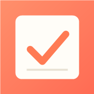
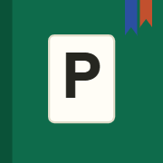
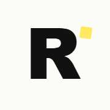

nij-621 · Vienna
회사 일과 집안일에서 반복되는 불편을 하나씩 앱으로 풀었습니다. 설치·가입 없이 링크를 누르면 바로 열리고, 데이터는 서버가 아니라 내 기기에 남습니다.

오늘 할 일과 하루 시간표를 한 화면에. 못 끝낸 일은 다음 날로 자동으로 넘어가고, 한 줄 일기와 기분을 함께 남깁니다. 종이 불렛저널의 느낌을 앱으로.

둘이 같은 장부를 실시간으로. 유로·원화 자동 환산, 매달 반복되는 지출은 알아서 기입, 자산 월별 기록까지. 8년치 엑셀 가계부를 그대로 옮겨 왔습니다.
한·영·독이 섞인 회의를 녹음하면 화자별 대본으로. 내 발언은 따로 표시되고, 정해진 형식의 회의록까지 뽑아 줍니다. AI 키는 내 폰에만 저장됩니다.

긴 영상, 결론부터 읽기. 링크를 붙여넣으면 핵심 주장과 근거를 한국어로 정리하고, 원하는 장면은 타임스탬프로 바로 갑니다.
흩어진 회의록을 한 형식으로 모아 사람·주제·기간으로 찾기. 다음 회의 전에 "지난번 이 사람과 이 주제에서 뭘 정했지?"를 2분 안에 복기합니다. MeetMemo와 같은 회의록 형식을 씁니다.
한 줄 입력으로 끝낸 일을 쌓고, 연말엔 자동 집계. 워드 파일과 손글씨 노트를 대체합니다. 업무 종류별 시간 비중이 평가와 업무 조정의 근거가 됩니다.